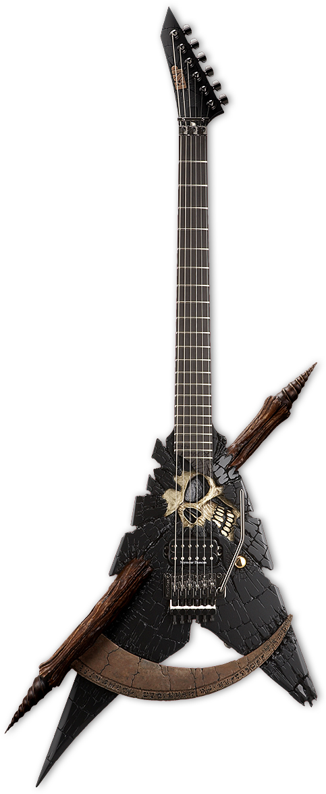
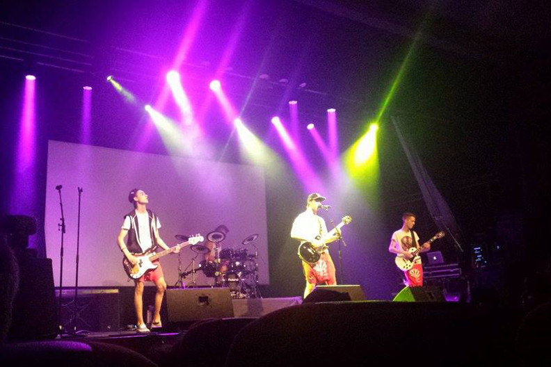

Välkommen till min hemsida som ska hjälpa dig att börja spela gitarr! Vi kommer att börja med att välja ut din första gitarr.
Beroende på din budget och spelstil så finns det flera alternativ. Att välja ut en bra börjar gitarr kan vara svårt.
Det finns också flera svåra val om hur du ska lära dig dit instrument. Ska du ta lektioner eller internetguider? Jag kommer att dela mina bästa källor och verktyg för att göra processen så enkelt och roligt som möjligt!
Jag är en elev på Bobergsgymnasiet i Ånge och jag har spelat bas och gitarr i många år. Jag spelar även i bandet Jaernslag, så ni kan vara säkra på att informationen på denna hemsida är bra!
Jaernslag på UKM Länsfestival, foto av Elian Wallin